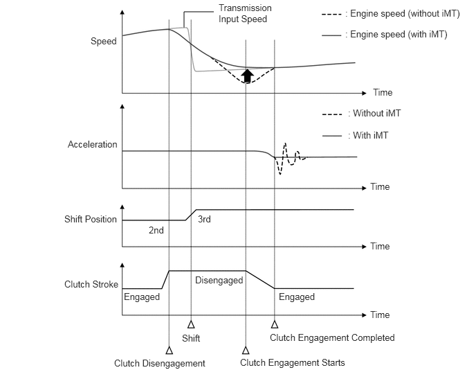
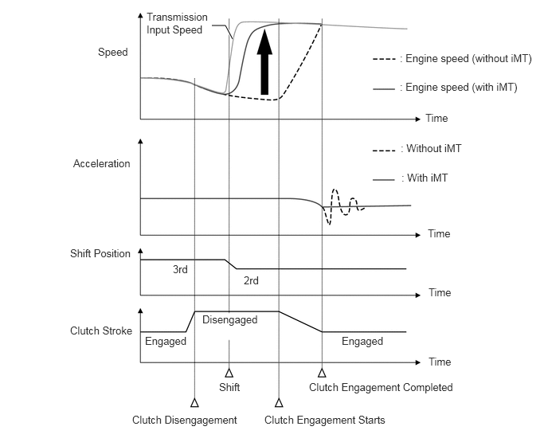

- Displays the iMT indicator (green) when the system is in the standby condition.
- Displays the message when there is a malfunction in the system.
| Last Modified: 10-07-2025 | 6.11:8.1.0 | Doc ID: NM100000002GB2N |
| Model Year Start: 2024 | Model: Tacoma | Prod Date Range: [12/2023 - ] |
| Title: RC60F (MANUAL TRANSMISSION / TRANSAXLE): MANUAL TRANSMISSION SYSTEM: iMT SYSTEM; 2024 - 2026 MY Tacoma [12/2023 - ] | ||
iMT SYSTEM
FUNCTION OF MAIN COMPONENTS
|
Component |
Function |
|
|---|---|---|
|
Injector Assembly |
Injects fuel to the combustion chamber in accordance with ECM signals. |
|
|
Crank Position Sensor |
Detects the engine speed and performs cylinder identification. |
|
|
Transmission Revolution Sensor |
Detects the input speed of the transmission. |
|
|
Clutch Stroke Sensor |
Detects the amount of pedal effort applied to the clutch pedal. |
|
|
Accelerator Pedal Position Sensor |
Detects the amount of pedal effort applied to the accelerator pedal. |
|
|
Combination Switch Assembly |
iMT Switch |
Switches the iMT system on/off. |
|
ECM |
Controls the engine speed based on signals from each sensor and switch. |
|
|
Combination Meter Assembly |
Speedometer |
Transmits the vehicle speed signal to the ECM. |
|
Multi-information Display |
|
|
FUNCTION
(a) The iMT system detects shift changes from the driver (depressing the clutch pedal and operating the shift lever) and synchronizes the engine speed with the transmission input speed after a shift change, achieving a smooth and comfortable shift feeling.
(b) This system operates when the iMT switch is operated and the iMT indicator (iMT system standby condition) is displayed on the multi-information display in the combination meter.
(1) When Upshifting
- Control is performed so that the engine speed after a shift change does not drop below the transmission input speed and to reduce the shock caused when the clutch is engaged, achieving a smooth shift feeling. 
(2) When Downshifting
- After a shift change, the engine speed is raised to synchronize with the transmission input speed, reducing the shock caused when the clutch is engaged and achieving a smooth shift feeling. 
DIAGNOSIS
(a) When the ECM detects a malfunction, the ECM prohibits iMT system operation. In this case, the iMT indicator on the multi-information display in the combination meter is displayed in amber.
(b) The ECM will also store the Diagnostic Trouble Codes (DTCs) of the malfunctions. The DTCs stored in the ECM are output to the GTS via the DLC3.
(c) For details, refer to the Repair Manual.